Lance os avisos do banco no iPhone
Um aviso do banco ou do Pix vira lançamento no TrackExpenses de três jeitos: colando o SMS, o e-mail ou o comprovante, de qualquer banco que deixe copiar o texto; com uma automação de e-mail, se o banco avisa por e-mail; e com uma automação de Mensagens, se ele manda SMS. Este guia mostra qual serve para você e configura a de SMS passo a passo, com telas do Atalhos em português.
Primeiro: como seu banco avisa?
Nenhuma automação do iPhone consegue ler a notificação de outro app, e é assim que muitos bancos brasileiros avisam. Olhe seus últimos avisos. Seu banco avisa…
- Por notificação do app (Nubank, C6, Inter, PicPay, Mercado Pago): a notificação não pode ser copiada nem lida por uma automação. Cole o comprovante, se o app do banco deixar copiar o texto, ou lance a compra por voz.
- Por SMS (Itaú no serviço de aviso por SMS, Bradesco, Banco do Brasil): use a automação deste guia.
- Por e-mail a cada compra: use a automação de e-mail.
Se você paga com Apple Pay, o Atalhos também tem o gatilho “Carteira”: ele roda a cada compra, e a ação “Importar transação da Carteira” lança a compra. Os passos estão no app, em “Mais” → “Lançamento automático de SMS” → “Importar também compras com Apple Pay”. Se o banco também manda SMS dessas compras, use um caminho só por cartão, senão cada compra chega duas vezes.
Colar um aviso
Copie o texto do SMS, do e-mail ou do comprovante, quando o app do banco deixa copiar (a notificação em si não dá para copiar). Abra um novo gasto no TrackExpenses e toque em “Colar”. Valor, estabelecimento, data e cartão vêm preenchidos, e você confere antes de salvar. Se o final do cartão no aviso for o mesmo de uma das suas contas, o lançamento vai para essa conta, e a categoria vem do que você já lançou naquele estabelecimento.
Do Nubank, cole o e-mail da compra ou o comprovante, se o app deixar copiar o texto; se não, lance a compra por voz. Ao colar, o app também lê o que uma automação deixa passar sem lançar, como um estorno ou uma compra cancelada, porque você vê o resultado antes de salvar.
O que você precisa para a automação
- Um iPhone com iOS 17 ou posterior e o app Atalhos, da Apple.
- O TrackExpenses no mesmo iPhone.
- Um banco que mande SMS a cada lançamento.
As telas deste guia são do iOS 27. No iOS 26 e anteriores, as telas são diferentes e alguns passos mudam; os passos para a sua versão estão no app, em “Mais” → “Lançamento automático de SMS”.
Escolha a palavra do filtro
A automação só roda com mensagens que contêm o texto que você escolher. Use R$: todo aviso de banco brasileiro escreve o valor com R$, seja compra, Pix, saque ou salário, e quase nenhuma mensagem pessoal tem esse símbolo. Não escolha um remetente: os bancos trocam de número de vez em quando, e um filtro por remetente pararia de funcionar sem avisar.
A configuração passo a passo
São 18 passos, feitos uma vez só, em poucos minutos.
Comece na Biblioteca
Abra o app Atalhos. Volte para “Biblioteca” e escolha “Automação”.
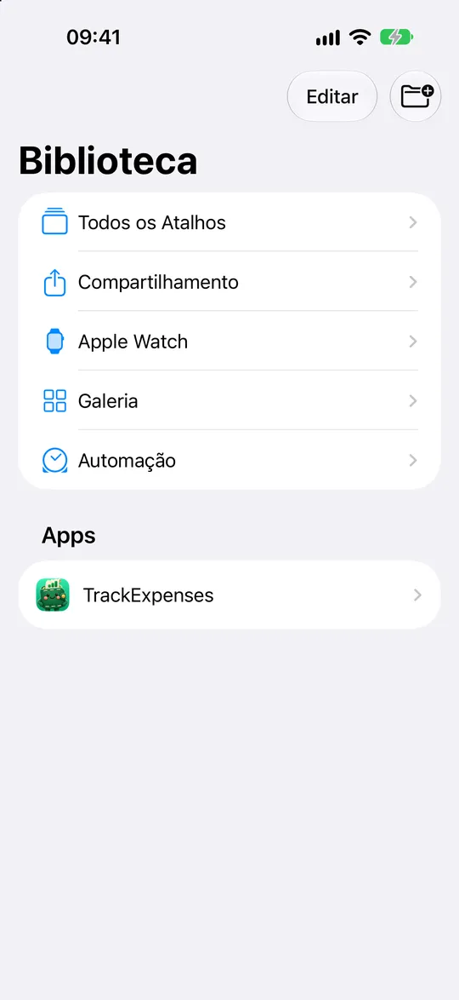
Crie um novo atalho
Toque no + embaixo. No iOS 27, as automações ficam dentro dos atalhos.
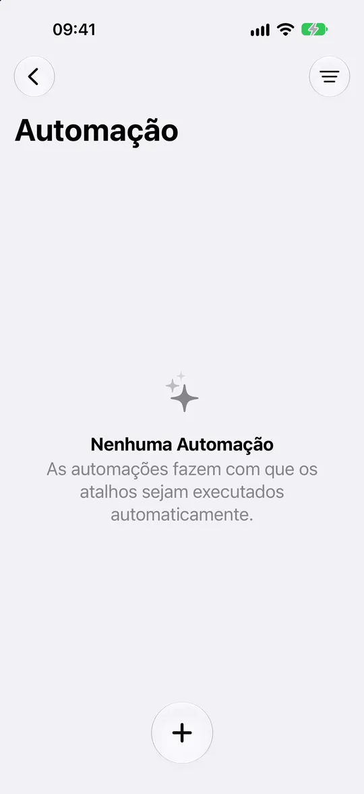
Abra o editor
Se abrir “Descrever um Atalho”, toque em “Editor” ou “Editar”. Depois toque em “Automação” no painel de ações.
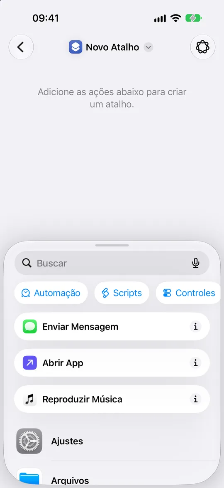
Escolha “Mensagem”
Em “Comunicação”, toque em “Mensagem” para adicionar o gatilho de mensagem recebida.
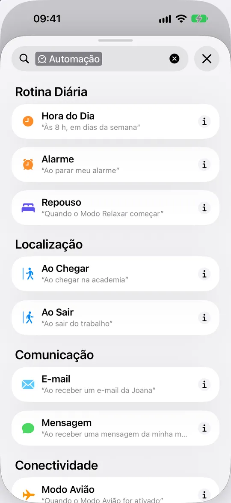
Mude o campo do filtro
Toque no primeiro campo azul “Remetente”. Ele escolhe qual parte da mensagem vai ser comparada.
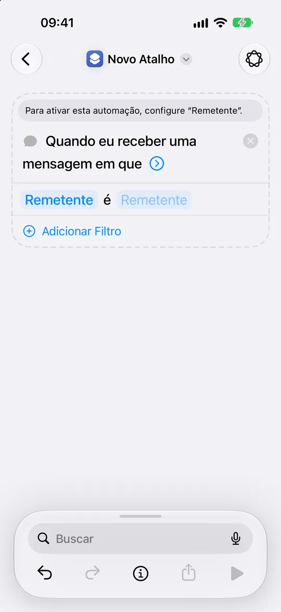
Filtre pelo texto da mensagem
Escolha “Mensagem” no menu. A condição fica “Mensagem contém Texto”.
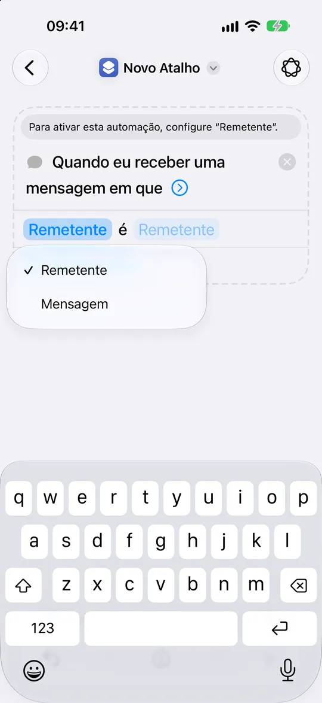
Use as palavras do seu banco
Toque em “Texto” e digite algo que aparece em todo SMS do seu banco, como o símbolo “R$”. Depois toque na seta azul do gatilho.
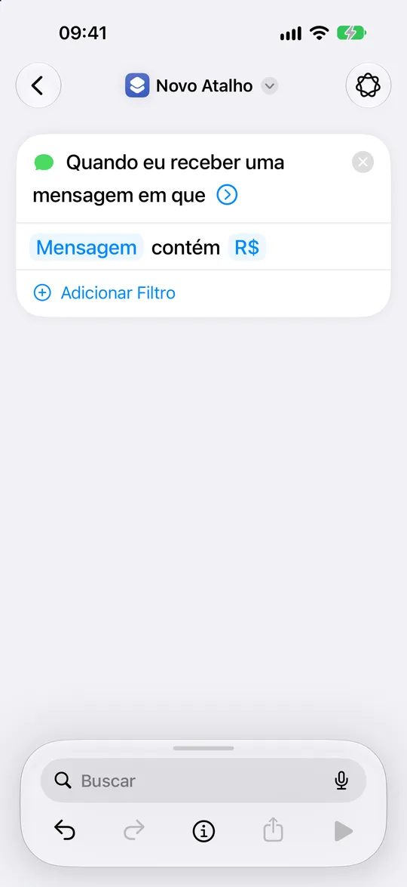
Deixe rodar sozinho
Deixe “Automação” ativada e “Confirmar Antes de Executar” desativado. Eles substituem a antiga tela “Executar Imediatamente”.
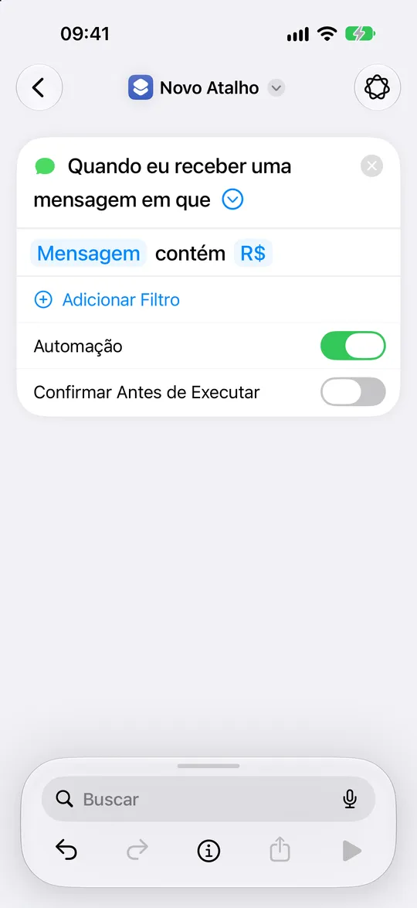
Encontre a ação de importar
Toque em “Buscar”, digite “Importar SMS do banco” e escolha a ação do TrackExpenses.
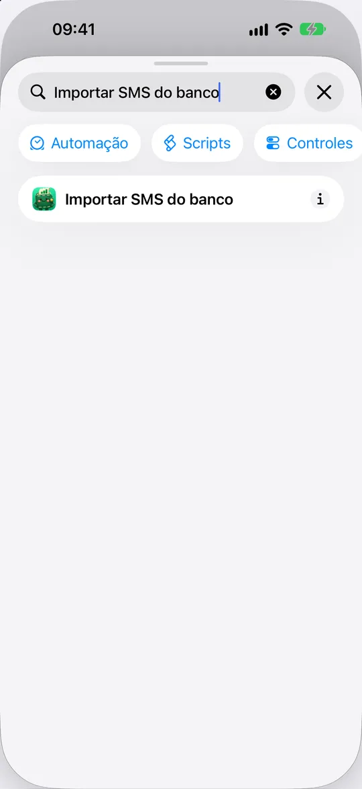
Conecte o texto recebido
Toque no marcador azul “Mensagem” dentro de “Importar lançamento de Mensagem”.
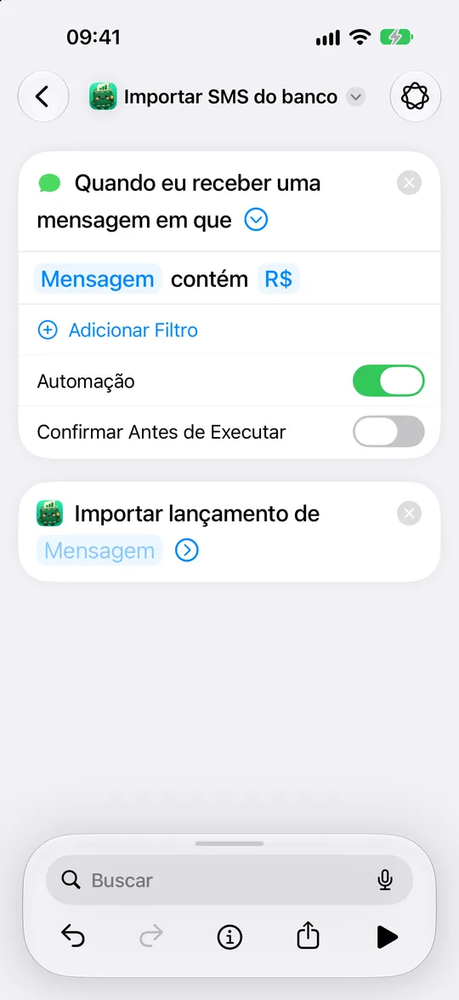
Abra “Selecionar Variável”
Toque em “Selecionar Variável” na barra de baixo. Não digite uma mensagem nem use “Sempre Perguntar”.
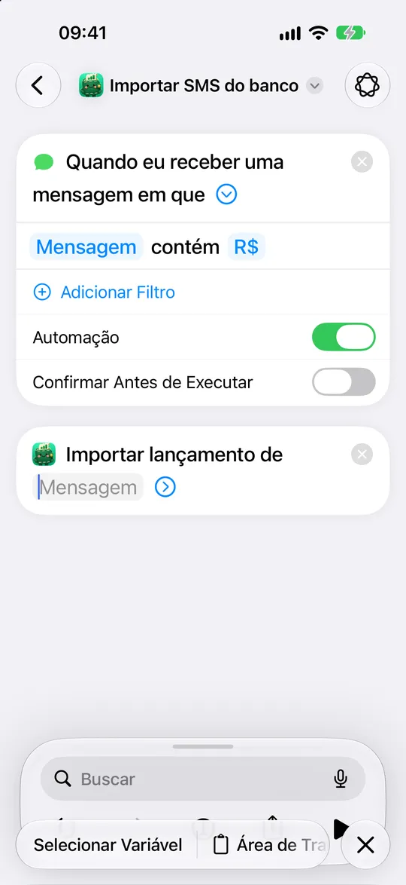
Escolha a “Mensagem” do gatilho
Toque em “Mensagem” logo abaixo do gatilho. No iOS 27, essa é a saída da mensagem recebida.
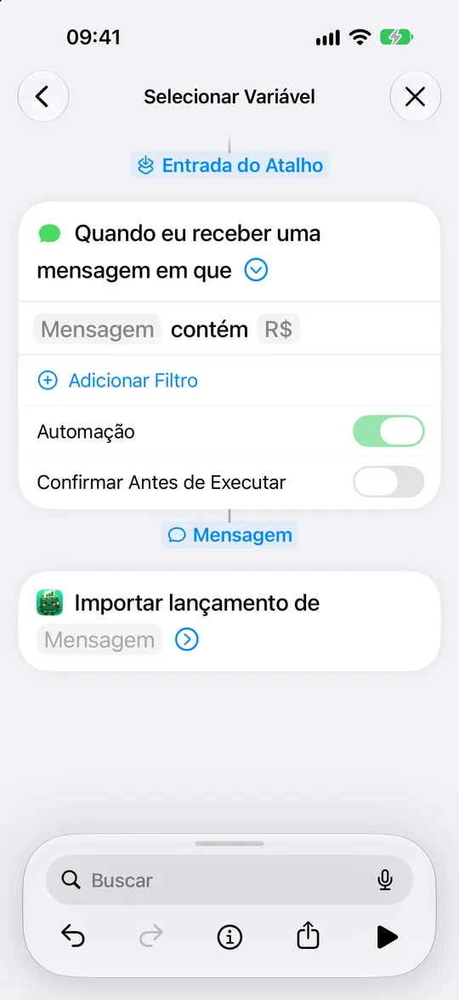
Use o corpo da mensagem
Feche a barra de baixo com ×. Toque na variável “Mensagem” inserida para ver as propriedades dela.
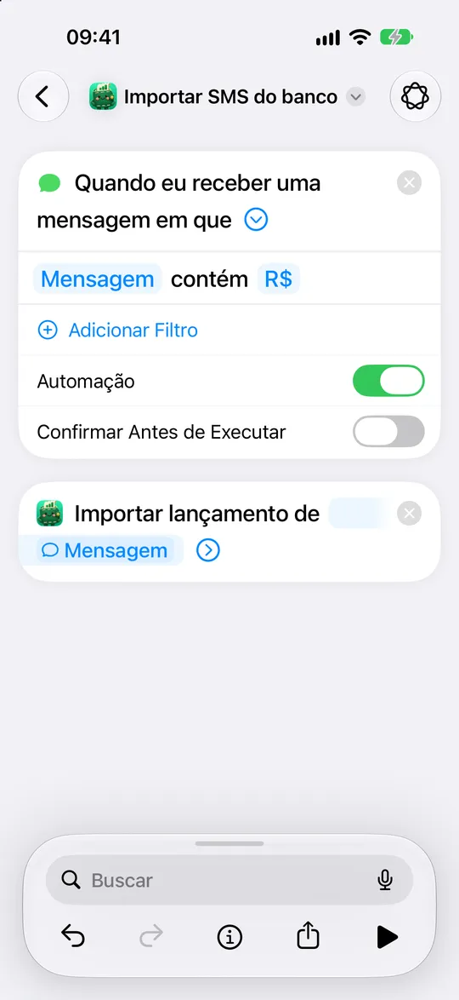
Escolha “Conteúdo”
Na lista “Obter” da variável, escolha “Conteúdo”. Toque em “Retorno” e feche a barra de variáveis com ×.
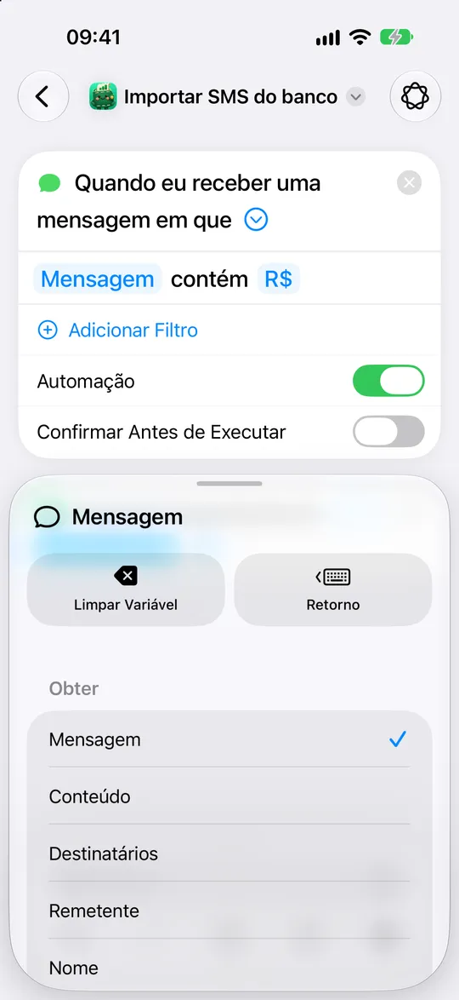
Importe em silêncio
Abra a seta azul da ação de importar e desative “Mostrar ao Executar”. A variável conectada deve dizer “Conteúdo”.
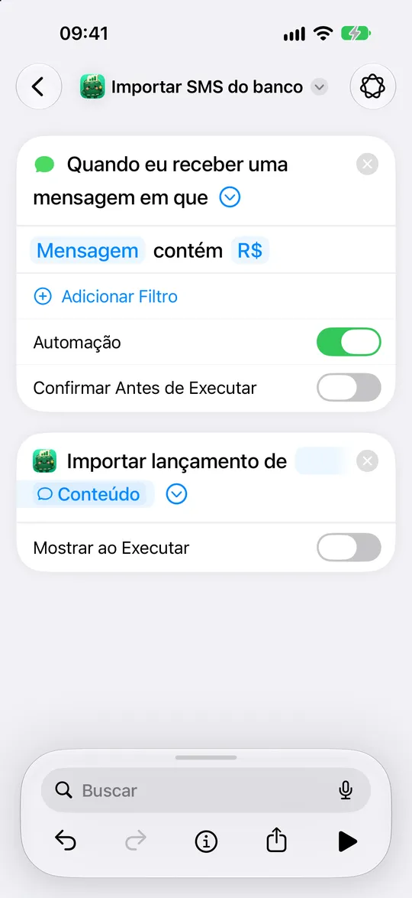
Confira a privacidade do atalho
Toque no botão ⓘ na barra do editor e abra “Privacidade”.
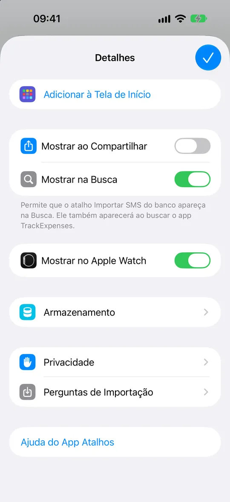
Permita com o iPhone bloqueado
Deixe “Permitir Execução Quando Bloqueado” ativado. Volte para “Detalhes”, toque em “OK” e depois volte para salvar o atalho.
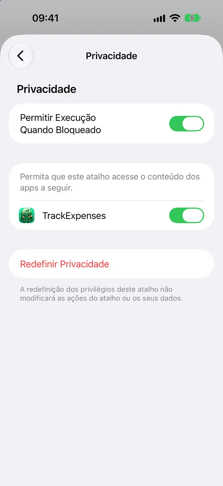
Pronto para o próximo SMS do banco
Confirme que a automação está ativada. Confira o próximo SMS que combinar no TrackExpenses → “Mais” → “Lançamento automático de SMS”.
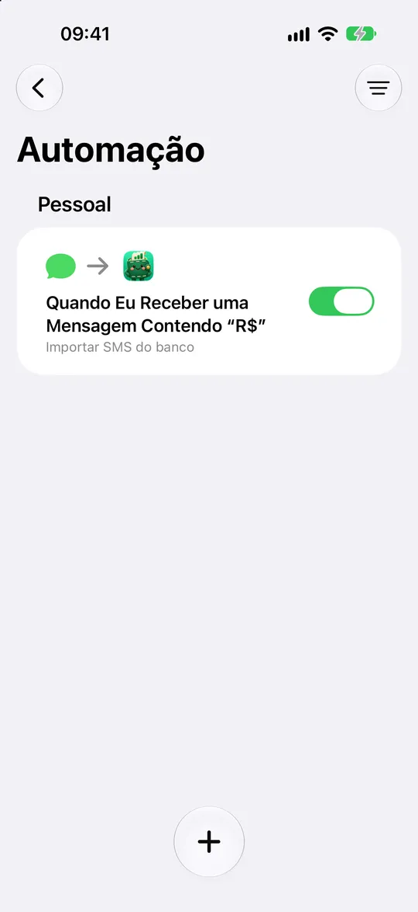
O que acontece depois
Quando chega um SMS que combina, o TrackExpenses lê valor, estabelecimento, data e cartão. O lançamento vai para a conta do cartão com o mesmo final e ganha a categoria que o app aprendeu com seus lançamentos anteriores. O que vale conferir aparece num cartão no topo da lista do dia.
- Códigos de verificação, compras negadas, perguntas como “Você reconhece esta compra?”, cobranças Pix e promoções não são lançados.
- Estornos e compras canceladas também não entram sozinhos: cole a mensagem para conferir.
- Salário e Pix recebido entram como receita e ficam marcados para revisar. Para desligar, use a chave “Importar dinheiro que entra”.
- Uma compra em outra moeda sem cotação salva espera você definir a cotação, para não entrar nos totais com um valor errado.
- O iOS mostra o próprio aviso toda vez que a automação roda. É uma regra da Apple que nenhum app consegue tirar.
10 importações bem-sucedidas por mês são grátis em cada aparelho. O que chega depois fica guardado fora dos seus totais e não se perde: o Pro acrescenta tudo; senão, o limite grátis do mês seguinte libera o que couber.
Se um aviso não foi lançado
- Abra “Mais” → “Lançamento automático de SMS” e cole a mensagem no cartão “Teste uma mensagem do seu banco”. Você vê na hora se ela foi lida e, se não foi, por quê.
- Confira se a automação está ativada e se “Confirmar Antes de Executar” está desativado.
- Confira se a variável da ação é a “Mensagem” do gatilho e se mostra “Conteúdo” (passos 10 a 15).
- Confira se a palavra do filtro está escrita igual aos avisos do banco.
Um aviso que não entrou sempre pode ser copiado e colado num novo gasto.
Privacidade
O TrackExpenses não lê suas mensagens: o iOS não permite isso a nenhum app. A automação que você configurou passa só o texto da mensagem que combina, e esse texto é lido no seu iPhone. Nos seus lançamentos fica o que foi lido (valor, estabelecimento, data), não o texto do SMS. Não há conexão com o banco nem conta no app.
Perguntas frequentes
O app lê todas as minhas mensagens?
Não. Ele só recebe as mensagens que contêm o texto que você escolheu na automação. Você cria a automação e pode desligar ou apagar no Atalhos quando quiser.
O app entende os avisos dos bancos brasileiros?
Ele lê compra aprovada, Pix enviado e recebido, saque e débito automático, com valores escritos como R$ 1.234,56. Não dá para garantir para todo banco, então teste antes um aviso seu no cartão “Teste uma mensagem do seu banco”.
Quantos avisos o app lança de graça?
10 importações bem-sucedidas por mês em cada aparelho. O que passar disso fica guardado e não é apagado: o Pro acrescenta tudo; senão, o limite grátis do mês seguinte libera o que couber.
Saiba mais
Lance os avisos que chegam por e-mail
TrackExpenses em português: todos os recursos
Em inglês:
- SMS Auto-Import Setup: iOS 27 and 26
- Fix Bank SMS Automation on iPhone
- Track Apple Pay Purchases on iPhone
Seu dinheiro, mais fácil de acompanhar.
Controle de Gastos por Voz, para iPhone, iPad e Mac.
5,0 de 5 na App Store · 10 avaliações em 7 países · Conferido em 21/11/2026
Sobre o app: o que é grátis e o que o Pro acrescenta
Controle de Gastos por Voz (TrackExpenses) é um app de Mohamed Elatabany para iPhone e iPad com iOS/iPadOS 17 ou posterior e para Macs com Apple silicon, em português do Brasil, inglês, árabe, alemão e espanhol. Não precisa de cadastro no app nem de login do banco. Você pode colar o SMS ou o e-mail do banco, ou o comprovante quando o app do banco deixa copiar o texto, e o lançamento vem preenchido; automações opcionais no app Atalhos lançam os avisos que chegam por e-mail ou por SMS e as compras da Carteira. O app não lê suas mensagens nem seu e-mail. O iPhone não deixa copiar o texto de uma notificação, e nenhuma automação consegue ler as notificações de outro app: quando o banco avisa só assim, o caminho é lançar a compra por voz ou colar o e-mail, se o banco mandar. A entrada por voz cria rascunhos no próprio aparelho, nos aparelhos e idiomas compatíveis. Ao tocar e segurar o ícone do app aparecem “Falar um gasto”, “Novo gasto”, “Colar SMS do banco” e “Perguntar ao coach”. No plano grátis: lançamentos manuais ilimitados, orçamentos, alertas de orçamento (aos 80% quando o gasto está mais rápido que o planejado, e quando o orçamento estoura), lembretes de contas às 9h da véspera de cada gasto recorrente, mover dinheiro entre orçamentos no período atual e cobrir um orçamento estourado sem mudar o total, dias restantes e valores gastos e disponíveis, estatísticas, busca que soma o que foi gasto e recebido em tudo o que encontra, em todos os períodos, sincronização pelo seu iCloud entre iPhone, iPad e Mac, 3 contas, 2 lançamentos recorrentes, 10 entradas por voz salvas e 10 importações automáticas bem-sucedidas de avisos do banco por mês do calendário em cada aparelho. O coach financeiro lê o último mês do seu orçamento e sugere um limite. O que ele responde por regras, os gráficos, os arquivos e os lançamentos digitados ficam no aparelho. Uma pergunta aberta só vai para o Claude, da Anthropic, por um servidor do desenvolvedor, depois que você concorda; com ela vão a conversa, um resumo deste mês e do anterior e, se o modelo pedir, totais de até 13 meses ou até 20 compras com data, estabelecimento, categoria e valor, e nunca notas, comprovantes, nomes ou números de conta nem saldos (10 perguntas grátis por mês em cada aparelho). Os avisos que passam do limite grátis ficam guardados, bloqueados fora dos seus totais: com o Pro, todos entram; sem ele, o limite do mês seguinte libera os que couberem. Nada se perde e o histórico nunca é bloqueado. O Pro acrescenta entrada por voz, importações, contas e lançamentos recorrentes ilimitados, desafios com o coach e mais perguntas, o plano do salário, previsões, orçamento diário geral, por orçamento ou só para as categorias escolhidas até uma data dentro do período, com as contas fixas descontadas primeiro, simulações, “Exportar e compartilhar” (desde a versão 1.15.0 toda exportação é Pro: planilha CSV de um mês, de um período ou de tudo, e o backup JSON completo com restauração), importação CSV, temas e ícones alternativos. Há assinatura mensal e anual e uma compra única (Vitalício). Quando o Pro acaba, nada do que foi salvo fica bloqueado. Os cálculos vêm dos seus lançamentos e não são consultoria financeira.